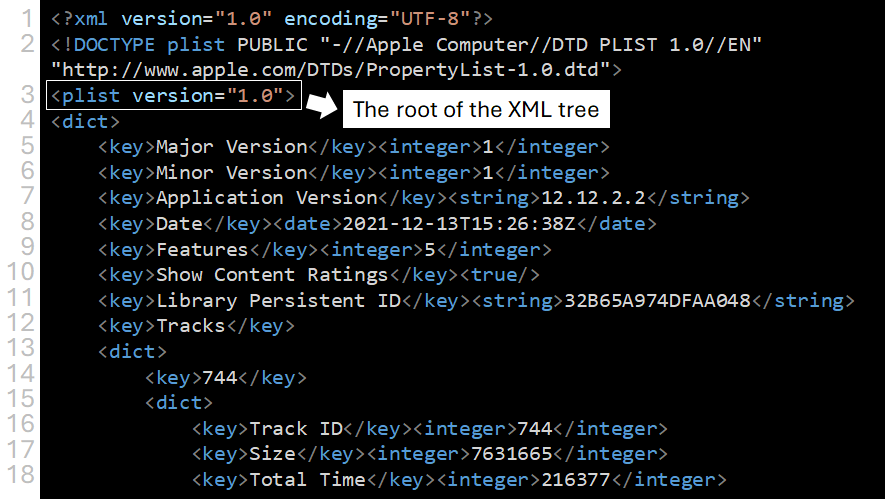
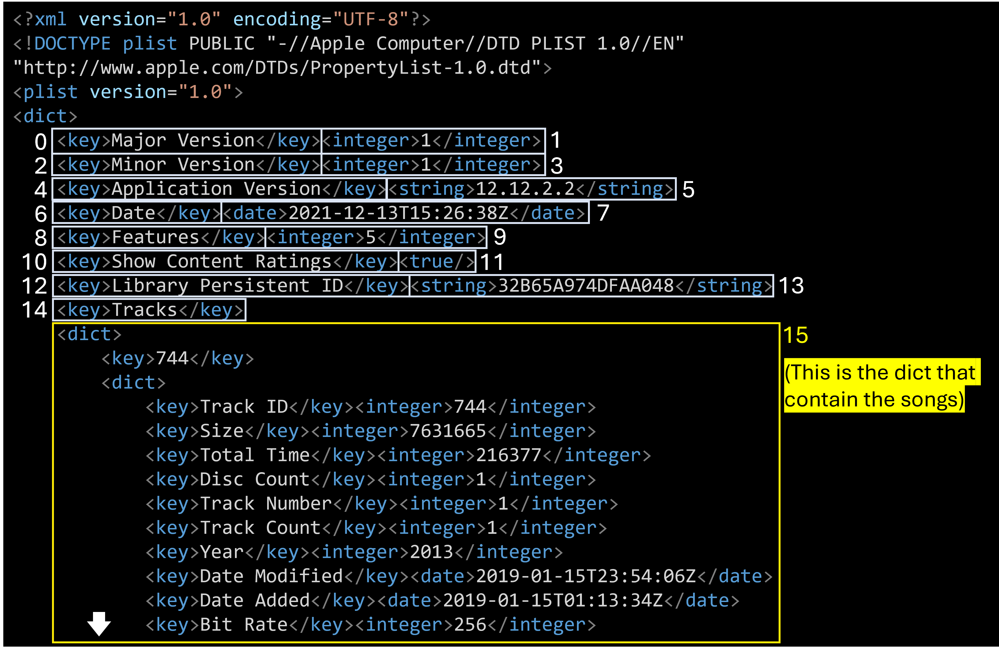
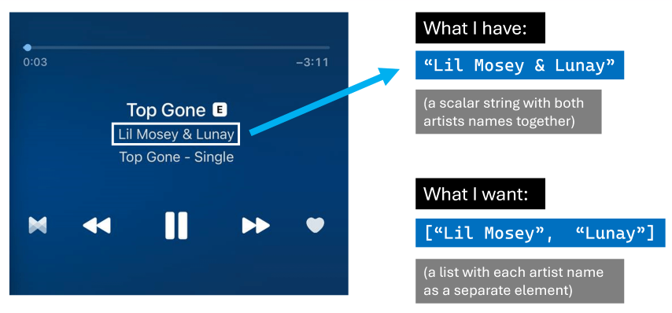
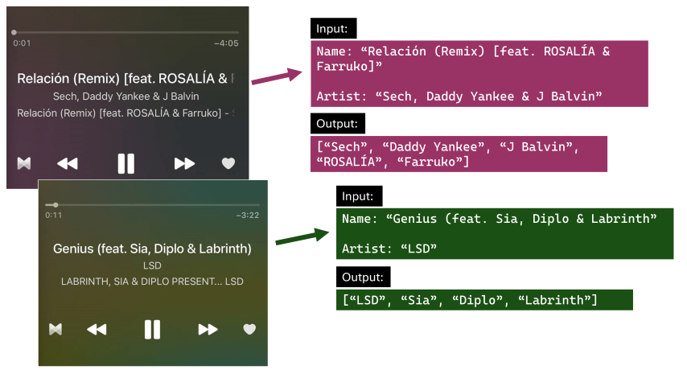

A couple of months ago, I decided that it was time for me to finally grow out of my R comfort zone and start studying Python. I began my Python journey by reading the book Python for Data Analysis from Wes McKinney (creator of pandas, the Python equivalent of the tidyverse), and having finished it I wanted to put into practice what I’ve learned through an applied data analysis.
And since I love listening to music, why not analyze my own music collection? I told myself. So here I am, sharing with you the insights and data visualizations I obtained from my music library, along with the code I used in this analysis.
In this post I will show you:
How to import the iTunes Library XML file into Python.
How to parse the contents of that file into a pandas DataFrame.
How I used pandas, matplotlib/seaborn, and regular expressions to answer questions on that DataFrame, such as: Which are my most listened songs, albums and artists? or Which genres predominate in each decade of my music?
And last but not least, how I expanded the analysis with R by using reticulate to pass pandas DataFrames to an R session, and then creating a nice table/playlist with the best songs of each era with the gt R package.
Also, note that if you use iTunes (or Apple Music), you can do this too. All you need to do is locate the ‘iTunes Library.xml’ file and then run the Python code in this post against that file (although you probably will need some minor modifications).
Importing and parsing the iTunes Library XML file
First things first, we import the required Python libraries:
import pandas as pd
import numpy as np
from lxml import objectify
import xml.etree.ElementTree as ET
import requests
import seaborn as sns
import matplotlib
matplotlib.use('Agg')
from matplotlib import pyplot as plt
from matplotlib import style
import os
import re
import pycats
To allow you to run the code of this post, I put my XML file in a public URL. This Python snippet downloads the file from that URL the first time is run (if the file has already been downloaded, it won’t do anything).
if not os.path.isfile('iTunes.xml'):
path = 'https://onedrive.live.com/download?cid=59E4C7D110DACCCC&resid=59E4C7D110DACCCC%21595580&authkey=AM93Z8YvAb4JiBY'
r = requests.get(path, allow_redirects=True)
open('iTunes.xml', 'wb').write(r.content)
Once we have the iTunes.xml file in our working directory, we can load it in an “Element Tree” object through the function ET.parse(). As its name says, this data structure resembles a tree, which makes sense since XML files are a hierarchical data format.
We can extract the “root” of this “tree” by using the method getroot(). Then, we can use that root as a starting point for exploring the whole tree.
tree = ET.parse('iTunes.xml')
root = tree.getroot()
At this point, I think it helps to take a look at the first lines of the XML to have an idea of how it actually looks like:
<?xml version="1.0" encoding="UTF-8"?>
<!DOCTYPE plist PUBLIC "-//Apple Computer//DTD PLIST 1.0//EN" "http://www.apple.com/DTDs/PropertyList-1.0.dtd">
<plist version="1.0">
<dict>
<key>Major Version</key><integer>1</integer>
<key>Minor Version</key><integer>1</integer>
<key>Application Version</key><string>12.12.2.2</string>
<key>Date</key><date>2021-12-13T15:26:38Z</date>
<key>Features</key><integer>5</integer>
<key>Show Content Ratings</key><true/>
<key>Library Persistent ID</key><string>32B65A974DFAA048</string>
<key>Tracks</key>
<dict>
<key>744</key>
<dict>
<key>Track ID</key><integer>744</integer>
<key>Size</key><integer>7631665</integer>
<key>Total Time</key><integer>216377</integer>
<key>Disc Count</key><integer>1</integer>
<key>Track Number</key><integer>1</integer>
<key>Track Count</key><integer>1</integer>
<key>Date Modified</key><date>2019-01-15T23:54:06Z</date>
<key>Date Added</key><date>2019-01-15T01:13:34Z</date>
<key>Bit Rate</key><integer>256</integer>
<key>Sample Rate</key><integer>44100</integer>
<key>Play Count</key><integer>33</integer>
Nodes in XML files, such as root, should have a tag and a dictionary of attributes. We can get these with the following code:
root.tag
## 'plist'
root.attrib
## {'version': '1.0'}
These values tell us that the root is located in the third line of the XML file:

Below that root, we have a dict that contains keys such as Major Version (associated with the integer value “1”) and Application Version (associated with the string value “12.12.2.2”). Then, at line 12, there is a key named Tracks. This key is different because its value is not a scalar but another dict, and if we look at its contents, we see what seems like information about a song.
This nested dict (Tracks) is the piece of the XML tree that we’re looking for. Inside it, there are many dicts, one per song in the music collection, and each of these contains a set of attributes about the song they represent, e.g. Artist, Date Added to the collection, last time played, etc.
Now we need to use Python to navigate to that part of the tree and extract the Tracks dict to convert it into a pandas DataFrame.
The following code does that: it iterates over the main dict (the element that comes after ‘plist’) until it finds the Tracks dict (which can be recognized because it’s the first element with tag=="dict"). Then it saves it in an object named tracks_dict.
main_dict=root.findall('dict')
for index, item in enumerate(list(main_dict[0])):
print('index #{} = <{}>'.format(index, item.tag))
if item.tag=="dict":
print('The tracks dict has been found!')
tracks_dict=item
break
## index #0 = <key>
## index #1 = <integer>
## index #2 = <key>
## index #3 = <integer>
## index #4 = <key>
## index #5 = <string>
## index #6 = <key>
## index #7 = <date>
## index #8 = <key>
## index #9 = <integer>
## index #10 = <key>
## index #11 = <true>
## index #12 = <key>
## index #13 = <string>
## index #14 = <key>
## index #15 = <dict>
## The tracks dict has been found!
To better explain what’s going on, I made the following illustration highlighting the items over which we’re iterating, including the node that contains the dict with all the songs (i.e. the node we’re looking for). Having reached that node, the for loop saves it as tracks_dict and stops the iteration.

At this point, tracks_dict is a dict of dicts, and each dict inside it represents a track from my music collection. Let’s convert this dict into a list
tracklist=list(tracks_dict.findall('dict'))
I can check the length of the list, which should match the number of songs in my iTunes collection.
len(tracklist)
## 1565
Indeed, it’s the same number of songs I have in iTunes, so we’re on the right path.
Creating a pandas DataFrame
By now, I have a list containing a dict per each song in my collection, but lists are not good data structures for doing data analysis. I want a DataFrame.
However, there remains a challenge for converting this list into a DataFrame: it contains different “kinds” of media (e.g. purchased music, ripped music, music videos, audiobooks), and each of these may have different attributes.
Let’s see which are these “media kinds”
kinds=set([])
for i in range(len(tracklist)):
for j in range(len(tracklist[i])):
if (tracklist[i][j].tag=="key" and tracklist[i][j].text=="Kind"):
kinds.add(tracklist[i][j+1].text)
kinds=pd.Series(list(kinds))
kinds
## 0 Apple Lossless audio file
## 1 Audio Apple Lossless
## 2 Archivo de audio AAC comprado
## 3 Archivo de Audible
## 4 Video MPEG-4 comprado
## 5 Purchased AAC audio file
## 6 Archivo de audio AAC
## 7 Archivo de video MPEG-4
## 8 Archivo de audio MPEG
## dtype: object
I don’t want to perform an analysis on audiobooks or music videos, so I will filter those out.
kinds_i_want = pd.Series(['Archivo de audio AAC comprado',
'Purchased AAC audio file',
'Archivo de audio MPEG',
'Apple Lossless audio file',
'Audio Apple Lossless',
'Archivo de audio AAC'])
I plan to retrieve the available attributes for each of the kinds_i_want and then “merge” them to end up with a DataFrame containing all the existing features (even if some of them are not available for every kind). For example, if kind “purchased songs” has attributes A, B and C, and kind “ripped songs” has attributes B, C and D, I want to end up with a DataFrame with columns A, B, C and D.
My first step for doing so is to create the function cols which, for a given kind, will return a set containing the attributes available in the data.
# This code will retrieve all the 'keys' (attributes) of the first track of the corresponding Kind
def cols(kind):
cols=[]
kind_found=False
for i in range(len(tracklist)):
for j in range(len(tracklist[i])):
if tracklist[i][j].tag=="key":
cols.append(tracklist[i][j].text)
if (tracklist[i][j].text=="Kind" and tracklist[i][j+1].text==kind):
kind_found=True
if kind_found:
return set(cols)
cols('Archivo de audio AAC comprado')
## {'Play Date', 'Play Count', 'Location', 'Total Time', 'Explicit', 'Sort Composer', 'Artwork Count', 'Track Count', 'Sort Album', 'Skip Date', 'Track Type', 'Sort Artist', 'Album Artist', 'Loved', 'Size', 'Track Number', 'Purchased', 'Artist', 'Track ID', 'Album', 'Composer', 'Persistent ID', 'File Folder Count', 'Date Added', 'Bit Rate', 'Kind', 'Date Modified', 'Disc Count', 'Library Folder Count', 'Play Date UTC', 'Skip Count', 'Name', 'Sample Rate', 'Genre', 'Release Date', 'Year', 'Sort Name'}
Once the function is defined, I use map to iterate over all the kinds_i_want, then I convert the results to a result_list.
results = map(cols, kinds_i_want)
results_list = [list(item) for item in results]
results_listis a list of lists, so the next step is to “flatten” it out and convert it into a set to remove the repeated attributes (by definition, sets don’t have duplicated elements).
flat_list=[]
for item in results_list:
for sub_item in item:
flat_list.append(sub_item)
unique_cols=set(flat_list)
unique_cols
## {'Grouping', 'Play Date', 'Stop Time', 'Play Count', 'Location', 'Explicit', 'Total Time', 'Sort Composer', 'Artwork Count', 'Disc Number', 'Track Count', 'Music Video', 'Sort Album', 'Comments', 'Part Of Gapless Album', 'Skip Date', 'Disliked', 'Track Type', 'Sort Artist', 'Disabled', 'Album Artist', 'Loved', 'Volume Adjustment', 'Clean', 'Size', 'Has Video', 'Start Time', 'Purchased', 'Track Number', 'Artist', 'Protected', 'Track ID', 'Album', 'Rating Computed', 'Composer', 'Album Rating', 'Sort Album Artist', 'Persistent ID', 'File Folder Count', 'Date Added', 'Bit Rate', 'Compilation', 'Kind', 'Content Rating', 'Date Modified', 'Disc Count', 'Library Folder Count', 'Rating', 'Play Date UTC', 'Skip Count', 'Album Loved', 'Album Rating Computed', 'Name', 'Sample Rate', 'Genre', 'Release Date', 'Year', 'Sort Name'}
len(unique_cols)
## 58
There we have it: a superset containing all the song attributes available in the XML file. There are 58 in total, and some are only available for specific kinds of media.
But the most important thing about this set is that it allows me to finally create a DataFrame with all the songs of my collection. The following code does that, using unique_cols and tracklist as input:
df_tracks=pd.DataFrame(columns=unique_cols)
dict1={}
for song_i in range(len(tracklist)):
for attribute_i in range(len(tracklist[song_i])):
if tracklist[song_i][attribute_i].tag=="key":
dict1[tracklist[song_i][attribute_i].text]=tracklist[song_i][attribute_i+1].text
list_values=[i for i in dict1.values()]
list_keys=[j for j in dict1.keys()]
if dict1['Kind'] in kinds_i_want.unique():
df_temp=pd.DataFrame([list_values],columns=list_keys)
df_tracks=pd.concat([df_tracks,df_temp],axis=0,ignore_index=True,sort=True)
Please note that this code is very inefficient, probably because it does a DataFrame concat for each song in tracklist. I will leave it like that because it doesn’t take long to run anyway (since my data is relatively small). But don’t use it as a reference for anything.
The good news is that I now have a DataFrame with all my songs, so I can use all the pandas’ functions and methods to manipulate and analyze them.
py$df_tracks[1:5,c("Album", "Name", "Artist", "Year")]
## Album
## 1 Do What U Want (feat. Christina Aguilera) - Single
## 2 Callaita - Single
## 3 Blue
## 4 Con Altura (feat. El Guincho) - Single
## 5 Siempre Papi Nunca Inpapi - Single
## Name
## 1 Do What U Want (feat. Christina Aguilera)
## 2 Callaita
## 3 Polaroid
## 4 Con Altura (feat. El Guincho)
## 5 Siempre Papi Nunca Inpapi
## Artist Year
## 1 Lady Gaga 2013
## 2 Bad Bunny & Tainy 2019
## 3 Jonas Blue, Liam Payne & Lennon Stella 2018
## 4 ROSALÍA & J Balvin 2019
## 5 Luigi 21 Plus & J Balvin 2019
What are my most listened songs?
An obvious question to answer with this data is what are the songs, albums, and artists that I listen to the most.
I will start with the easiest ranking to obtain: my most listened to songs. Here no aggregation is needed, I just have to sort_values based on Play Count, and then extract the “head” of the resulting DataFrame:
df_tracks[['Play Count']] = df_tracks[['Play Count']].apply(pd.to_numeric)
top_songs=(df_tracks
.sort_values(by='Play Count', ascending=False)
[['Name', 'Artist', 'Play Count', 'Genre']]
.head(10))
top_songs
## Name Artist Play Count Genre
## 133 Watermelon Sugar Harry Styles 160 Pop
## 142 Adore You Harry Styles 156 Pop
## 132 Lights Up Harry Styles 149 Pop
## 143 Golden Harry Styles 135 Pop
## 141 Cherry Harry Styles 126 Pop
## 139 To Be So Lonely Harry Styles 120 Pop
## 140 Falling Harry Styles 114 Pop
## 778 Relaciones Lunay 111 Urbano latino
## 137 Sunflower, Vol. 6 Harry Styles 110 Pop
## 799 Top Gone Lil Mosey & Lunay 109 Hip-Hop/Rap
Having done that, I can use seaborn to create a neat ranking plot with horizontal bars.
plt.clf()
ax=sns.barplot(x='Play Count',
y='Name',
hue='Artist',
data=top_songs,
dodge=False,
palette=sns.color_palette("Set1", 3))
ax.figure.set_size_inches(7,5)
ax.xaxis.grid(True)
ax.set(ylabel='Track')
plt.tight_layout()
plt.savefig('test.png', dpi=400)
plt.show()

Most listened albums
Now I will do a ranking of my most listened to albums. For this, I need to aggregate Play Counts at album level. I will also discard singles or albums with too few songs.
First, I create a DataFrame with the albums I consider as “full” or “complete”: those with five tracks or more.
ntracks_album=df_tracks.groupby('Album').size()
full_albums=(ntracks_album[ntracks_album>5]
.reset_index()
.rename(columns={0: "n_tracks"}))
full_albums
## Album n_tracks
## 0 (What's the Story) Morning Glory? 12
## 1 1989 (Deluxe Edition) 19
## 2 35 Top Hits, Vol. 6 - Workout Mixes 34
## 3 A Brief Inquiry Into Online Relationships 15
## 4 A Rush Of Blood To The Head 11
## .. ... ...
## 78 YHLQMDLG 20
## 79 evermore 15
## 80 folklore 17
## 81 reputation 15
## 82 Épico 14
##
## [83 rows x 2 columns]
Then I aggregate Play Count at album level, filter out incomplete or single albums by doing a “semi-join” with full_albums, and extract the head(10) from the DataFrame after doing sort_values.
plays_by_album=(df_tracks
.groupby('Album')['Play Count']
.sum()
.reset_index()
.sort_values(by='Play Count', ascending=False))
full_albums_ranked=plays_by_album[plays_by_album.Album.isin(full_albums.Album)]
full_albums_ranked.head(10)
## Album Play Count
## 120 Fine Line 1409
## 124 Four (Deluxe Version) 600
## 65 Chromatica 548
## 4 1989 (Deluxe Edition) 485
## 256 OASIS 451
## 222 Lover 424
## 202 La La Land (Original Motion Picture Soundtrack) 423
## 299 Scaled and Icy 415
## 230 Melodrama 400
## 129 Future Nostalgia 387
This is a lovely ranking, but I think it could be improved by removing the text between parentheses from some albums names (i.e. “Deluxe Version” from Four and 1989, and “Original Motion Picture…” from La La Land). That can be done through the string manipulation functions in Python:
full_albums_ranked['Album']=(full_albums_ranked
.Album.str.replace(' \(.+\)$', '', regex=True))
full_albums_ranked['Album'].head(10)
## 120 Fine Line
## 124 Four
## 65 Chromatica
## 4 1989
## 256 OASIS
## 222 Lover
## 202 La La Land
## 299 Scaled and Icy
## 230 Melodrama
## 129 Future Nostalgia
## Name: Album, dtype: object
The albums names now look better, so it’s time to create a ranking plot showing their respective play counts. This plot will be very similar to the songs plot, but this time I will map the colour of the bars to Play Counts (continuous variable) instead of the Artists name (categorical variable).
plt.clf()
ax=sns.barplot(x='Play Count',
y='Album',
hue='Play Count',
data=full_albums_ranked.head(10),
dodge=False,
palette='OrRd')
# Rotating labels trying to make them fit
ax.figure.set_size_inches(7,5)
ax.xaxis.grid(True)
plt.tight_layout()
plt.legend([],[], frameon=False)
plt.show()

Most listened artists
Obtaining the ranking of songs was straightforward, and so was the ranking of albums, despite involving a couple of extra steps. However, doing the ranking of artists will be a bit more complicated. The reason is that I will have to split/parse the artist column to handle collaborations (songs by more than one artist), so the play counts of these songs add up to all the collaborating artists.
For example, as you saw in the songs plot, one of my most played songs is “Top Gone” by Lil Mosey and Lunay. If I didn’t parse the “artist” for that song, those play counts wouldn’t count for Lil Mosey nor Lunay when doing the ranking, but for a third, totally different artist named ’Lil Mosey & Lunay”. Obviously I don’t want that.

The first thing here is to look at all the strings that signal a collaboration. In my collection, these are:
- ’ & ’
- ‘,’
- ’ Feat. ’
- ’ feat. ’
- ‘/’
Then I can use regular expressions and the method str.split to obtain a list of individual artists for each song.
delimiters=' & ',', ',' Feat. ',' feat. ','/'
regexPattern = '|'.join(map(re.escape, delimiters))
reg_split=re.compile(regexPattern)
artists_splitted=df_tracks.Artist.str.split(regexPattern)
artists_splitted[:10]
## 0 [Lady Gaga]
## 1 [Bad Bunny, Tainy]
## 2 [Jonas Blue, Liam Payne, Lennon Stella]
## 3 [ROSALÍA, J Balvin]
## 4 [Luigi 21 Plus, J Balvin]
## 5 [DJ Khaled]
## 6 [Rosalía]
## 7 [Rosalía]
## 8 [Rosalía]
## 9 [Rosalía]
## Name: Artist, dtype: object
I may also want to look for exceptions: cases where those strings are present, but there is no collaboration between several artists. I have three such cases:
- Zion & Lennox
- Wisin & Yandel
- Now, Now
The first two are duos of reggaeton singers. However, their duo names are just the names of the members joined with an ‘&’. What’s more, in both cases the members have released songs as solo artists. Therefore, I think it makes sense to regard these cases as collaborations and not add them as exceptions in the code.
The third case is different. It’s an indie rock duo from Minnesota, and here the band name is not a combination of the members’ names, but an indivisible artistic name, so I will add this as a hardcoded exception.
After splitting the artist strings, I want to create a data structure that allows a 1:N relationship between songs and artists, so the plays count of each track adds up to each of the contributing artists.
I think the appropriate data structure for this is a list of dictionaries, with each dictionary representing a song and containing a respective list of artists. The following code creates and populates such a list.
songs=[]
for i, song in df_tracks.Name.items():
## Parse the artists of the song
if df_tracks.Artist.values[i]=='Now, Now':
artist_to_assign=[df_tracks.Artist.values[i]]
else:
artist_to_assign=artists_splitted.values[i]
## add elements to the list of songs
songs.append({'Name': song,
'Number': i,
'Artists': artist_to_assign})
songs[:5]
## [{'Name': 'Do What U Want (feat. Christina Aguilera)', 'Number': 0, 'Artists': ['Lady Gaga']}, {'Name': 'Callaita', 'Number': 1, 'Artists': ['Bad Bunny', 'Tainy']}, {'Name': 'Polaroid', 'Number': 2, 'Artists': ['Jonas Blue', 'Liam Payne', 'Lennon Stella']}, {'Name': 'Con Altura (feat. El Guincho)', 'Number': 3, 'Artists': ['ROSALÍA', 'J Balvin']}, {'Name': 'Siempre Papi Nunca Inpapi', 'Number': 4, 'Artists': ['Luigi 21 Plus', 'J Balvin']}]
However, by looking at some songs in the dictionary, I realize I have another problem: I’m leaving out the artists’ names in the song name itself (for example, “Christina Aguilera” in “Do What U Want (feat. Christina Aguilera)”).
Fortunately, for these cases, there is a pattern that I can rely on: the artist(s) name(s) in the song name, if there are any, are always preceded by “feat” (featuring).
This pattern has three variations, based on the kind of brackets that surrounds it:
- Round brackets: Song name (feat. Artists names) (or sometimes just ‘(feat Artists names)’, without the dot).
- Squared brackets: Song name \[feat. Artists names\].
- No brackets: Song name feat. Artist name.
The easiest way to extract the artists’ names in these pattern variations is to create three different regexes, one for each variation, and then apply them conditionally by using str.contains.
# One regex for each pattern variation: round brackets, squared brackets, and no brackets
# Note how in the variations with brackets we have to look for the closing bracket, while in the "bare" variation we just extract everthying from "feat." to the end of the string
re_circ_brackets=re.compile(' \(feat\.* (.*)\)')
re_sq_brackets=re.compile(' \[feat. ([^\[]*)\]')
re_bare=re.compile(' feat. (.*)$')
# Creating bolean arrays based on which of the pattern variations is present in the song name (note that it could be none)
feat_curved_brackets=df_tracks.Name.str.contains('\(feat.').values
feat_squared_brackets=df_tracks.Name.str.contains('\[feat.').values
feat_bare=df_tracks.Name.str.contains(' feat.').values
Once I have the regexes and the boolean arrays, it’s possible to iterate over all the songs’ names and use the corresponding regex to extract the artists’ names (based on which boolean array as a True value for each track). Since the extracted string could have several artists’ names, I have to split it in the same way I did with the Artists column. Finally, I use these new artists lists to extend the artists lists that already exist in songs.
for i, song in df_tracks.Name.items():
if feat_curved_brackets[i]:
artists_feat=re_circ_brackets.search(song)[1]
elif feat_squared_brackets[i]:
artists_feat=re_sq_brackets.search(song)[1]
elif feat_bare[i]:
artists_feat=re_bare.search(song)[1]
if (feat_curved_brackets[i] or feat_squared_brackets[i] or feat_bare[i]):
splitted_artists_feat=reg_split.split(artists_feat)
songs[i]['Artists'].extend(splitted_artists_feat)

By this point, the dicts in songs contain already all the artists that collaborated for each track in my collection (🥳).
However, I will do one more pre-processing step before moving on to the aggregation of play counts: I’m going to”’normalize” artists names (removing dots and applying title case) to avoid their play counts getting split due to different spelling (e.g. ROSALÍA vs Rosalía, or J. Balvin vs J Balvin).
for i in range(len(songs)):
for j in range(len(songs[i]['Artists'])):
artist_name=songs[i]['Artists'][j]
norm_artist_name=artist_name.title().replace('.', '')
songs[i]['Artists'][j]=norm_artist_name
Then, finally, I can add up the play counts by artist:
artists={}
for i in range(len(songs)):
for j in range(len(songs[i]['Artists'])):
if songs[i]['Artists'][j] not in artists:
artists[songs[i]['Artists'][j]]=df_tracks['Play Count'][i]
else:
artists[songs[i]['Artists'][j]]+=df_tracks['Play Count'][i]
df_artists_plays=pd.DataFrame(artists.items(),
columns=['Artist', 'Play Count'])
df_artists_plays.head(5)
## Artist Play Count
## 0 Lady Gaga 831
## 1 Christina Aguilera 34
## 2 Bad Bunny 1437
## 3 Tainy 315
## 4 Jonas Blue 43
Having the artists ranking in a DataFrame, I can sort it and extract the top 10 rows to create the corresponding plot:
df_artists_plot=(df_artists_plays
.sort_values(by='Play Count', ascending=False)
.head(10))
df_artists_plot
## Artist Play Count
## 42 Taylor Swift 1847
## 8 J Balvin 1661
## 48 Harry Styles 1634
## 2 Bad Bunny 1437
## 58 One Direction 1138
## 0 Lady Gaga 831
## 183 Feid 809
## 136 Lunay 679
## 24 Twenty One Pilots 656
## 84 Dua Lipa 655
plt.clf()
ax=sns.barplot(x='Play Count',
y='Artist',
hue='Play Count',
data=df_artists_plot,
dodge=False,
palette='OrRd')
# Rotating labels trying to make them fit
ax.figure.set_size_inches(7,5)
ax.xaxis.grid(True)
plt.title('My Top 10 artists by play count')
plt.tight_layout()
plt.legend([],[], frameon=False)
plt.show()

My music across the ages (categorical data and more complex plots)
Another question I would like to answer is how my music listening habits relate to the year when songs were released. From the rankings above, you can already guess that I lean heavily into more modern/contemporary music and not so much into tracks from the 90’s or previous decades. But there still could be some interesting variation between more recent periods (let’s say, 2010-2014 vs 2015-2019 vs 2020-2022).
For this analysis, I will create a five-year period column, based on the release year of each song (for example, if a song was released in 1999, it will be in the 1995-1999 period, if it was in 2015, it will be in the 2015-2019 period, etc.)
First, I will create a FiveYearPeriod column in the original df_tracks dataframe:
df_tracks[['Year']]=df_tracks[['Year']].apply(pd.to_numeric)
df_tracks=(df_tracks
.assign(FiveYearPeriod=pd.to_numeric(np.floor(df_tracks.Year / 5) * 5, downcast='integer')))
Now I can see how many songs per five-year period I have in my collection:
df_tracks.groupby('FiveYearPeriod').size()
## FiveYearPeriod
## 1970 1
## 1975 2
## 1985 13
## 1990 2
## 1995 33
## 2000 93
## 2005 185
## 2010 254
## 2015 641
## 2020 337
## dtype: int64
As I suspected, I have very little music from before 1995, so I will group them all in a category labelled as ‘Before 1995’.
df_tracks.FiveYearPeriod=['Before 1995' if year < 1995 else year for year in df_tracks.FiveYearPeriod]
I will also convert the FiveYearPeriod column to a Categorical data type and give each period a label that indicates its starting and ending year (e.g. “1995-1999”).
catg_years=pd.Categorical(df_tracks.FiveYearPeriod,
ordered=True,
categories=['Before 1995', 1995, 2000, 2005, 2010, 2015, 2020])
df_tracks.FiveYearPeriod=catg_years.rename_categories({1995: '1995-1999', 2000: '2000-2004', 2005: '2005-2009', 2010: '2010-2014', 2015: '2015-2019', 2020: '2020-Present'})
After doing that, it’s very simple to obtain summary statistics by this new categorical column, such as the total number of songs for each period:
songs_period=df_tracks.groupby(['FiveYearPeriod']).size()
songs_period
## FiveYearPeriod
## Before 1995 18
## 1995-1999 33
## 2000-2004 93
## 2005-2009 185
## 2010-2014 254
## 2015-2019 641
## 2020-Present 337
## dtype: int64
Or the average song play count per period:
plays_period=df_tracks.groupby(['FiveYearPeriod'])['Play Count'].mean()
plays_period
## FiveYearPeriod
## Before 1995 5.555556
## 1995-1999 10.272727
## 2000-2004 5.526882
## 2005-2009 7.335135
## 2010-2014 12.838583
## 2015-2019 16.310452
## 2020-Present 20.017804
## Name: Play Count, dtype: float64
What’s more, now I can create a “combo” plot that displays the data from both aggregated datasets (total songs and average play counts) in the same figure:
plt.clf()
fig, ax1 = plt.subplots()
sns1=sns.barplot(x=songs_period.index, y=songs_period.values, alpha=0.5)
# Adding labels to bar plot
for a, b in zip(songs_period.index, songs_period.values):
plt.text(x = a, y = b+5, s = '{:.0f}'.format(b), size=7, color='black', ha='center')
ax2 = ax1.twinx()
sns2=sns.lineplot(x=plays_period.index, y=plays_period.values, marker='o')
sns2.set_ylim(0, 21)
## (0.0, 21.0)
sns1.set(xlabel='Periods', ylabel='Total songs')
sns2.set_ylabel('Average Play count', rotation=270, labelpad=12.0)
sns1.set_xticklabels(sns1.get_xticklabels(),rotation = 30)
# Adding labels to line plot
for x, y in zip(plays_period.index, plays_period.values):
plt.text(x = x, y = y, s = '{:.1f}'.format(y), size=8, color='white', ha='center').set_backgroundcolor('#3A87BC')
sns1.set(title='Number of songs and Average Play count by era')
plt.tight_layout()
plt.savefig('fig_twop_plots.png')
plt.show()

I would also like to create a plot that incorporates the genre dimension. Here I have the problem that genre names are not standardized across my music collection, that is, I have “variations” or slightly different spellings for the same genre, such as “Alternative” and “Alternativa”, or “Urbano Latino”, “Urbano latino” and “Latin Urban”. As a consequence, if I tried to add this variable “as-is” to a graphic I would have a severe overplotting problem.
I could try to remap/merge the genre variations through text manipulation and conditional logic, but I feel that that could easily become a rabbit hole similar to the artists names in collaborations.
Instead, I’ll do something simpler and use a library named pycats (basically a port of R’s forcats) to “lump” the less frequent genres as “Other”, and only keep the four more frequent genres as individual categories.
df_tracks['Genres_lumped']=pycats.cat_lump(pycats.as_cat(df_tracks['Genre']), 4)
df_tracks['Genres_lumped'].value_counts()
## Pop 585
## Other 452
## Alternative 191
## Rock 172
## Urbano latino 161
## Name: Genres_lumped, dtype: int64
The four more frequent genres make up about 70% of my music collection, so I still have plenty of songs that will appear with genre information in the plot.
And now it comes the fun part: creating the plot. I specified a custom colour palette for the genres and then used the geom function sns.stripplot to create a scatter plot where the period categories are in the X-axis and each point represents a song. I also set alpha=0.7 to show more darkness or density in the areas where is overplotting.
colors = {'Other': "grey", 'Pop': "#4878CF", 'Alternative': "#ffb300", 'Rock':"#D65F5F", 'Urbano latino': "#B47CC7"}
plt.clf()
plt.figure()
# Draw a categorical scatterplot to show each observation
ax = sns.stripplot(data=df_tracks, y="Play Count", x="FiveYearPeriod", hue="Genres_lumped", size=5, alpha=0.7, jitter=0.25, palette=colors)
ax.set_xticklabels(ax.get_xticklabels(),rotation = 30)
ax.legend(title='Genres')
plt.title('Play count of my songs, by era and genre')
plt.tight_layout()
plt.show()

Something I like about this plot is that it makes it easy to see what are the predominant genres in each period (e.g. Rock in 2005-2009, and Pop in 2015-2019). It also highlights how most of my songs have a very low play count, while a few get much more reproductions.
Creating a mixtape with the best songs from each era
The last figure I would like to obtain is a list or table with the 3 most listened songs per era, that is, 21 songs in total (3 songs x 7 periods).
For doing this, I will create a function in Python that takes in a DataFrame of songs and returns the top 3 songs from that DataFrame, based on the values of the column Play Count. Then I will apply that function to each FiveYearPeriod by using groupby and apply.
def top_songs(df, n=3, column='Play Count'):
return df.sort_values(by=column, ascending=False)[:n]
top_songs_per_era=(df_tracks
.groupby('FiveYearPeriod')
.apply(top_songs)
[['Album', 'Artist', 'Name', 'Play Count', 'FiveYearPeriod', 'Genres_lumped']])
Next, I will use the magic of reticulate to pass this aggregated DataFrame to an R session. Once there, I’m going to use the R package gt (grammar of tables) to create a HTML table that displays the best songs from each period with cute formatting.
library(gt)
library(tidyverse)
py$top_songs_per_era %>%
dplyr::select(FiveYearPeriod,
`Song` = Name,
Album,
Artist,
`Play Count`,
Genre = Genres_lumped) %>%
group_by(FiveYearPeriod) %>%
mutate(row_n = row_number(),
FiveYearPeriod = as.character(FiveYearPeriod)) %>%
ungroup() %>%
mutate(Era = if_else(row_n > 1, "", FiveYearPeriod)) %>%
select(-row_n) %>%
gt(groupname_col = "FiveYearPeriod",
rowname_col = "Song") %>%
cols_hide(columns = c(Era)) %>%
tab_style(
style = cell_text(color = "black", weight = "bold"),
locations = list(cells_row_groups(),
cells_column_labels(everything()))
) %>%
tab_options(
row_group.border.top.width = px(3),
row_group.border.top.color = "black",
row_group.border.bottom.color = "black",
table.font.names = "Bahnschrift") %>%
tab_source_note(
source_note = md(
"Source: My iTunes music library."
)
) %>%
tab_header(
title = md("My **favourite songs** across different eras"),
subtitle = "(This would be a nice playlist imho)"
) %>%
tab_footnote(footnote="Yes, this song is from 1991, but it appears here because iTunes uses the release date of the 'The Best of' album.",
locations = cells_stub(rows = "Losing My Religion")) %>%
tab_style(
style = cell_fill(color = "#fff7e5"),
locations = cells_body(rows = Genre == "Alternative")
) %>%
tab_style(style = cell_fill(color = "#ebf0fa"),
locations = cells_body(rows = Genre == "Pop")) %>%
tab_style(style = cell_fill(color = "#faebeb"),
locations = cells_body(rows = Genre == "Rock")) %>%
tab_style(style = cell_fill(color = "#f5edf7"),
locations = cells_body(rows = Genre == "Urbano latino")) %>%
tab_style(style = cell_fill(color = "#f2f2f2"),
locations = cells_body(rows = Genre == "Other"))
|
Album |
Artist |
Play Count |
Genre |
| Before 1995 |
| Bizarre Love Triangle |
Brotherhood |
New Order |
32 |
Rock |
| Express Yourself |
Like a Prayer |
Madonna |
16 |
Pop |
| Like a Prayer |
Like a Prayer |
Madonna |
11 |
Pop |
| 1995-1999 |
| All Star |
Astro Lounge |
Smash Mouth |
58 |
Other |
| I Think I'm In Love |
Ladies and Gentlemen We Are Floating In Space (Deluxe Version) |
Spiritualized |
43 |
Rock |
| The Bad Touch |
Hooray for Boobies |
Bloodhound Gang |
36 |
Rock |
| 2000-2004 |
| City of Blinding Lights |
How To Dismantle an Atomic Bomb |
U2 |
29 |
Rock |
| Let Love Be Your Energy |
Sing When You're Winning |
Robbie Williams |
28 |
Pop |
| Losing My Religion |
In Time: The Best of R.E.M. 1988-2003 |
R.E.M. |
25 |
Rock |
| 2005-2009 |
| Sleeping Lessons |
Wincing the Night Away |
The Shins |
43 |
Alternative |
| Dance In The Dark |
The Fame Monster |
Lady Gaga |
35 |
Pop |
| Low |
X&Y |
Coldplay |
28 |
Rock |
| 2010-2014 |
| Helena Beat |
Torches |
Foster The People |
107 |
Alternative |
| Stockholm Syndrome |
Four (Deluxe Version) |
One Direction |
61 |
Pop |
| Where Do Broken Hearts Go |
Four (Deluxe Version) |
One Direction |
60 |
Pop |
| 2015-2019 |
| Watermelon Sugar |
Fine Line |
Harry Styles |
160 |
Pop |
| Adore You |
Fine Line |
Harry Styles |
156 |
Pop |
| Lights Up |
Fine Line |
Harry Styles |
149 |
Pop |
| 2020-Present |
| Relaciones |
Relaciones - Single |
Lunay |
111 |
Urbano latino |
| Top Gone |
Top Gone - Single |
Lil Mosey & Lunay |
109 |
Other |
| Dakiti |
Dakiti - Single |
Bad Bunny & Jhay Cortez |
100 |
Other |
| Source: My iTunes music library. |
Your feedback is welcome! You can send me comments about this article by e-mail.